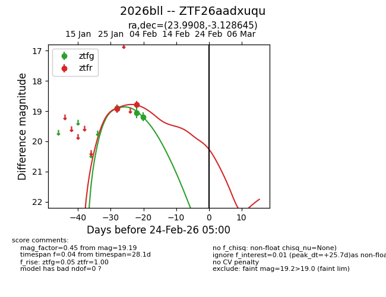
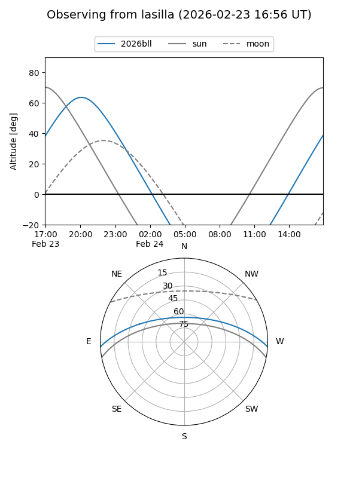
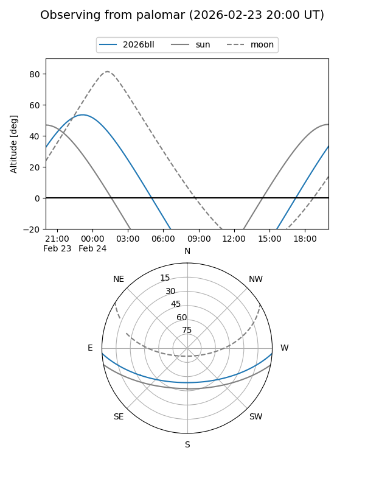

2026bll
Target 2026bll at 2026-01-27 06:06
Aliases and brokers:
FINK: link
Lasair: link
ALeRCE: link
TNS: link
YSE: link
alt names
ZTF26aadxuqu (ztf,fink_ztf)
2026bll (tns,yse)
Coordinates:
equatorial (ra, dec) = 23.9908,-3.12864
equatorial (HMS+DMS) = 01:35:57.79,-03:07:43.12
galactic (l, b) = (148.7657,-63.74448)
Flags:
Photometry:
last ztfg=18.90, ztfr=18.91
1 ztfg, 1 ztfr detections
Lightcurve

Visibility


Additional plots